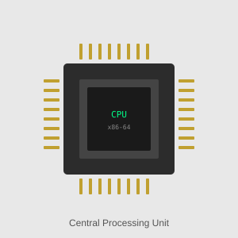
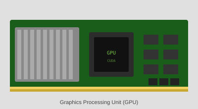
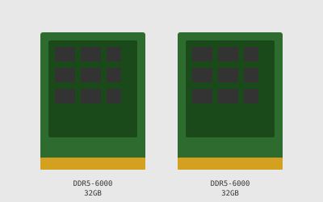
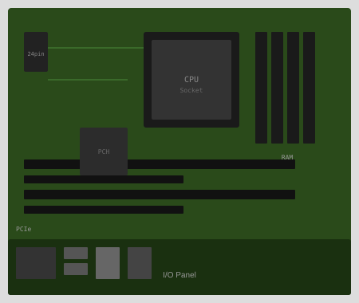

Step 1: Build a Computer
Let’s start from scratch. Before we can build a supercomputer, we need to understand how a regular computer is made — and what each component does.
A modern computer is a collection of hardware pieces that work together to process data, store information, and interact with users.
Essential Hardware Components
CPU (Central Processing Unit)
Often called the brain of the computer.
Executes instructions from programs, one after another or across multiple cores.
Controls the flow of operations — calculations, logic, and decision-making.
{kind=link}

CPU (Central Processing Unit) — the sequential logic processor at the heart of every computer.
Note
How does a CPU work?
A CPU processes tasks sequentially — like a single very fast worker handling a to-do list one item at a time. In any given moment, it might be: checking input from the keyboard, updating a system clock, calculating 1 + 1 for your program, then refreshing a small part of the screen. Each task gets a tiny time slice, one after the other, so fast that it feels simultaneous — but under the hood, it’s doing things in order. This is why a CPU is great at complex, varied tasks that require decision-making, but not ideal when you need to do the same simple thing thousands of times at once.
Actually… modern CPUs are not purely serial. Even a single core can process multiple instructions per clock cycle (via pipelining and superscalar execution), and most CPUs today have multiple cores (4–16 on laptops, 64+ on servers) that genuinely work in parallel. But compared to a GPU, the parallelism is modest — optimized for handling different complex tasks rather than thousands of identical simple ones.
GPU (Graphics Processing Unit)
Originally for graphics, now essential for parallel computing.
Contains many cores optimized for similar repetitive tasks — such as training AI models or processing thousands of images.
Useful in research tasks that involve matrix operations or large-scale data parallelism.
{kind=link}

GPU (Graphics Processing Unit) — highly parallel processor used for AI, imaging, and scientific simulations.
Note
How does a GPU work? A GPU takes the opposite approach: instead of one fast worker, imagine thousands of simpler workers all doing their small task at the same time. For example, to display an image on your screen, every pixel needs a color value. A CPU would calculate pixel 1, then pixel 2, then pixel 3… A GPU calculates the color of all pixels at once, in parallel. This is why GPUs were originally built for graphics — a 1920×1080 screen has over 2 million pixels to update many times per second. The same “do one simple operation across a massive dataset” pattern is exactly what makes GPUs so powerful for AI training, where you need to multiply millions of numbers in large matrices simultaneously.
Actually… a GPU doesn’t compute all pixels truly simultaneously. A typical GPU has thousands of cores, but a Full HD screen has over 2 million pixels — so the work is processed in large batches. Also, GPU cores follow a “Single Instruction, Multiple Threads” model: they are most efficient when all cores do the same operation on different data. When different cores need to do different things (branching), performance drops. This is exactly why GPUs complement CPUs rather than replace them.
Note
What is the difference between CPU and GPU?
A short video that intuitively explains the difference between CPUs and GPUs
RAM (Random Access Memory)
Temporary, fast memory used while your programs are running.
Holds active data and code in use.
Not the same as storage! RAM is cleared when the computer is turned off.
{kind=link}

RAM (Random Access Memory) — fast temporary memory that holds actively running programs and data.
Note
RAM is not the only memory in the computer
While RAM (Random Access Memory) is the most well-known type of memory, it’s just one part of a broader memory system that computers use to operate efficiently. Other important types include:
Cache memory: Small but extremely fast memory located on or near the CPU. It stores frequently accessed instructions and data to speed up execution.
Registers: Tiny storage units inside the CPU used to hold data that’s actively being processed. They operate faster than any other memory type.
ROM (Read-Only Memory): A type of non-volatile memory that stores permanent instructions, such as the computer’s firmware (e.g., BIOS or UEFI), which runs during startup.
Virtual memory: A portion of storage (e.g., your hard drive or SSD) that the operating system uses to simulate additional RAM when the actual RAM is full. It’s much slower but expands available working space.
Swap space: A specific part of the disk reserved by the OS (especially in Linux) to support virtual memory by temporarily holding data from RAM.
VRAM (Video RAM): Memory used by GPUs (Graphics Processing Units) to store visual data like textures, 3D models, or image matrices. It’s optimized for parallel processing and is essential for high-performance tasks such as AI model training and image rendering.
Each of these memory types serves a specialized function. Together, they ensure that different parts of the computer — from the CPU to the GPU — have quick access to the data they need.
Storage (HDD/SSD)
Long-term storage of files and programs.
SSD (Solid State Drive) is faster and more common in research laptops than HDD.
Stores your operating system, datasets, documents, and applications.
Note
Not all storages are the same
Not all storage devices perform the same — they differ in speed, reliability, and technology.
SSD (Solid State Drive): Fast, reliable, and now common in laptops and servers. Uses flash memory with no moving parts, which makes it much faster than older technologies.
HDD (Hard Disk Drive): Slower and more prone to wear because it uses spinning magnetic disks and a moving read/write head. Still used for large-capacity archival storage due to lower cost per terabyte.
eMMC (embedded MultiMediaCard): Slower flash storage found in budget devices like tablets or low-end laptops. Not designed for heavy workloads.
Optical drives (CD/DVD) and magnetic tape: Rare today in personal computing, but still used for long-term cold storage or archival backups. Very slow access speeds.
In modern research workflows, SSD is preferred for active data processing because of its high read/write speeds, while HDDs or network-attached storage may be used for backup or long-term storage.
Network Interface Card (NIC)
Connects your computer to the internet or local network.
Can be wired (Ethernet) or wireless (Wi-Fi).
Essential for remote access, cloud computing, and downloading datasets.
Note
The Internet, IP addresses, Virtual Private Networks, ssh
The Internet is a global system of interconnected networks that allows computers to communicate using standardized protocols. It underlies many services — not just web browsing, but also email, file sharing, and secure access to remote machines.
Every device connected to the internet has an IP address — a unique identifier, like a mailing address, that allows data to be sent to and from the correct location. Some IP addresses are static (they never change), while others are dynamic (assigned temporarily by your internet provider and may change when you reconnect). Servers usually have static IPs so they can be reached reliably.
To protect internal services, many universities and institutions restrict access based on IP addresses. If you’re working remotely, you may not be allowed to connect directly to internal systems. This is where a Virtual Private Network (VPN) is useful. A VPN creates a secure, encrypted tunnel between your computer and your institution’s network. When connected through a VPN, your computer appears as if it is inside the university — which enables access to licensed resources, shared drives, internal portals, or computing environments that would otherwise be blocked.
A key tool for accessing remote research infrastructure is SSH (Secure Shell). SSH allows you to securely log into another computer or server using only a terminal window — no graphical interface is needed. It provides command-line access to powerful systems like cloud servers or supercomputers. SSH is encrypted and can be secured with cryptographic key pairs, making it both safe and widely trusted in scientific computing.
In practice, support teams and researchers may use SSH in combination with VPNs to connect to institutional clusters, manage datasets, and run computational workflows from anywhere in the world. Firewalls and institutional policies often limit who can access what, so access may require registration or setup in advance.
Note
Different networks – different speeds
Not all internet connections are equally fast — and the type of connection you use can significantly affect how quickly you can access cloud storage or transfer data.
Wired Ethernet (e.g., Gigabit Ethernet): Typically offers stable, high-speed connections around 1 Gbps (1000 Mbps). Ideal for downloading large datasets or syncing with remote storage.
Wi-Fi:
Wi-Fi 5 (802.11ac): Up to 400–900 Mbps in real conditions.
Wi-Fi 6 (802.11ax): Can reach 1–2 Gbps, but speed varies with distance and interference.
Mobile Networks:
4G: Real-world speeds are around 20–100 Mbps — enough for email or browsing, but slow for large file transfers.
5G: Can offer 200 Mbps to over 1 Gbps depending on coverage — fast enough for cloud access, but latency and reliability may vary.
When using cloud storage or remote servers, a slow connection can become a bottleneck — even if your storage or computing resources are fast. For large data transfers, wired Ethernet is usually the most stable and efficient.
Power Supply Unit (PSU)
Converts electricity from the wall into usable power for your components.
Motherboard
The main circuit board where all components plug in.
Handles communication between the CPU, RAM, storage, and peripherals.
{kind=link}

Motherboard — the main circuit board connecting all components.
Interfaces for the User
These are the parts that make a computer usable by humans:
Monitor (screen): to see the output.
Keyboard & mouse: to provide input.
USB/HDMI ports: for connecting external devices (storage drives, cameras, projectors).
These are not just conveniences — they’re essential for interacting with the system, especially during setup or troubleshooting.
Discussion
Cooking Metaphor: Assembling Your Research Kitchen
CPU = the chef: decides what to cook and when.
GPU = food processor: powerful but specialized.
RAM = kitchen counter: workspace where prep happens.
Storage = pantry and fridge: long-term ingredient storage.
NIC = the telephone or delivery door: communicates with the outside world.
Motherboard = the kitchen layout: connects all the tools.
Keyboard and mouse = your hands and tools: how you work in the kitchen.
Without these components in place and connected, your kitchen — or your computer — can’t function.
Bonus insight for support teams
Support teams often help researchers choose:
Which hardware specs are needed for a task,
Whether a local machine is sufficient,
Or whether a shared or remote resource is more appropriate.
Understanding these components helps you:
Read tech specs with confidence,
Talk with IT teams or vendors,
Support researchers with realistic expectations about performance.